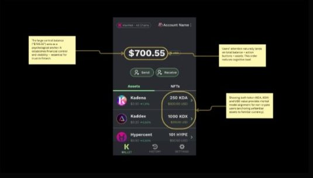
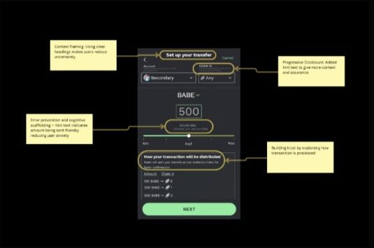
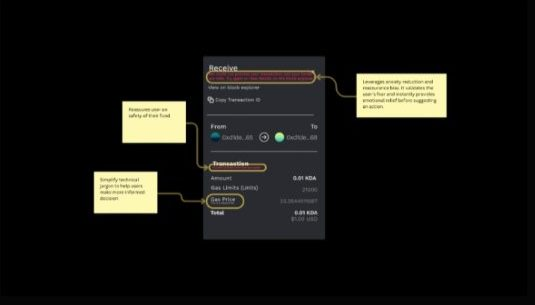

Overview
Kadet is a browser extension wallet built on the Kadena blockchain that helps everyday users manage crypto safely and confidently. As content design and UX writing co-lead at Tech Fleet, I worked with product designers, blockchain engineers and UX researchers across 8 sprints on Phase 2, refining the wallet's content system and turning a technical Web3 interface into a product that teaches, reassures and empowers users. The goal: reduce fear and friction for first-time crypto users.
The problem: using a crypto wallet feels risky and technical
Testing revealed high emotional friction. Participants said things like "I'm scared to click something wrong" and "I don't understand what a 'Seed Phrase' or 'Chain ID' is." Crypto wallets weren't failing because of bad UX alone. They were failing because of language. Our challenge was to make blockchain feel safe, not secretive.
Phase 1 feedback highlighted five challenges:
- Dashboard comprehension. Users didn't understand options like "Mainnet", "double arrows" or percentages, and didn't know whether figures referred to holdings, gas fees or exchange rates.
- Transfer flow confusion. Participants couldn't tell who they were sending tokens to or what percentage values represented. Terms like "chain depiction" and "gas fee" made them fear irreversible errors.
- Sign-up and recovery anxiety. "Seed Phrase" caused uncertainty even among experienced testers. Many asked for simpler labels like "Security Key" or "Recovery Code".
- Unfamiliarity with blockchain concepts. Several testers had no idea what Kadena was and wanted an FAQ or onboarding guide.
- Lack of educational scaffolding. There was no clear "learning layer": no tooltips, about pages or contextual hints.
Approach: content that gives clarity, trust and confidence
Instead of writing in isolation, I treated content as a system that supports user confidence. We defined three content design principles: cognitive clarity (simplify technical terms, reduce mental load), emotional reassurance (microcopy that calms fear and builds trust), and behavioural guidance (tone and structure that lead users through safe actions).
Redesigning content for critical flows
1. Confirming security: simplifying the "Secret Phrase" step
Users hesitated at the "Seed Phrase" step. The term felt technical and intimidating, and several testers misunderstood the order of confirmation. I reframed the title as "Confirm Secret Phrase", aligning with familiar mental models of privacy and security (secrets are meant to be protected, not decoded), and added a short instruction, "Select each word in the order it was presented to you," to make the task concrete and error-proof. Principles applied: cognitive reframing and error-prevention feedback loops.
2. Setting up transfers: reducing mental load
The redesigned dashboard places the total balance at the visual centre as a psychological anchor that signals financial stability, and pairs token values with fiat equivalents so new users can interpret information instantly. Principles: anchoring, mental-model alignment, cognitive fluency.

3. Shaping context with progressive disclosure
In the Send From flow, users were uncertain about terms like Chain ID and Chainweb. I rewrote the heading as "Set up your transfer", framing the page as a guided task, added contextual hint text beneath Chain ID ("Choose the blockchain network for this transaction."), added a descriptive amount sub-label ("Amount you are sending"), and rewrote "Any Chain Summary" as "How your transaction will be distributed", turning a dense technical concept into a transparent, trust-building explanation.

4. Designing for failure states: reducing transaction anxiety
In blockchain, a failed transaction often triggers panic. Users described this as "high anxiety" because they feared losing access to funds. The existing message, "We could not process your transaction", stated the issue but offered no reassurance or recovery guidance. I reframed it to be empathetic, clear and actionable: acknowledging the error, reassuring users about the safety of their funds, and guiding the next step. Principles: anxiety reduction through reassurance, error recovery framing (from blame to guidance), and restoring locus of control.

Results
Onboarding completion rate. Users finished setup faster with fewer drop-offs.
Comprehension scores during testing of transaction and dashboard terminology.
participants described the wallet as "friendly, easy to follow, and safe".
The content library and tone framework were adopted across Kadet's broader product suite, and engineers began proactively referencing content tokens and tone guidelines in code reviews.
Key learnings
- Emotion drives adoption. Reducing fear increased completion rates more than any UI tweak.
- Consistency builds confidence. Repetition of familiar terms made crypto concepts predictable.
- Microcopy is behaviour design. The smallest words shaped trust, timing and task completion.
If I evolved this further
- Introduce Save Progress functionality for long onboarding flows.
- Design guided empty states that teach users what is next when no transactions exist.
- Embed AI-driven contextual help, so users can ask questions like "What does gas fee mean?" in real time.